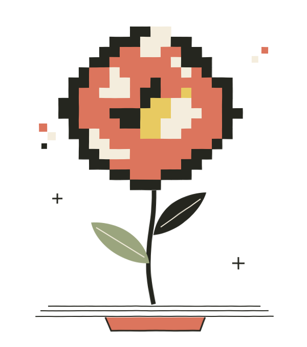

Ідея, що
може
вирости.
Винагорода Venture Lead · пілот
$400щомісяця+$200командний бонус
Бонус — за місяць досягнення спільного показника. Умови ↗
Від університетського задуму —
до продукту, який живе самостійно.
Venture Layer — це люди й правила, які допомагають пройти цей шлях. Розберімося разом: просто, наочно й крок за кроком.
Подивитися, як це працюєДО ВЛАСНОЇ СПРАВИ№ 01

турботу й перевірки
Звідки береться
перша іскорка?
Ідея може прийти трьома шляхами. Оберіть один — цей навчальний приклад супроводжуватиме нас далі.
Спочатку — обрати, що варто дослідити
Venture Lead вивчає доступні можливості та їхній потенціал. Коли бере можливість до портфеля, відкриваються її журнал і перша стадія — Ideation. Це відбувається до G1.
можливості, які веде Lead
Чотири стадії.
Кожна має своє питання.
Стадія — це відрізок роботи. Наприкінці розглядають результати й обирають наступний крок. Така точка рішення називається G — gate.
Що ми хочемо
змінити?
Як це сформульовано у White Paper +
✳ Попередні напрацювання зберігаються. Придатні докази враховують і на наступних стадіях.
Потрібно людям.
Можливо зробити.
Будь-яка ідея має два головні ризики. Обидва перевіряють упродовж шляху. Оберіть, що зараз викликає більше запитань.
Venture Lead визначає вагу ризиків на G1. Після зміни центрального припущення її переглядають.
Винагорода
Venture Leads
Запропонована винагорода за супровід проєктів під час пілоту.
кожному щомісяця
кожному за місяць досягнення спільного показника
щомісяця за координацію, додатково до базових $400
У місяць досягнення спільного показника Lead отримує $600, а Managing Lead — $800.
Показник для командного бонусу визначає Board до початку періоду.
Порахувати фонд пілоту +
Фіксована частина — $8 400. Командний бонус додається за місяці досягнення спільного показника.
Усі суми — у доларах США. Податки й резерв завершення погоджують окремо.
Власна справа.
Спільна підтримка.
За продукт відповідає команда. Venture Lead допомагає організувати шлях, перевірки та наступні кроки. Оберіть роль, щоб познайомитися ближче.
Як працює спільне рішення BoardСпробувати +
У пілоті Board має чотирьох членів. Для кворуму потрібні троє присутніх, серед них — представник Business Partner або його замінник. Рішення потребує більшості серед присутніх із правом голосу та позитивного голосу Business Partner.
За конфлікту інтересів інші члени залишаються в підрахунку кворуму, але утримуються від голосування в цьому питанні. За особистого конфлікту представника Business Partner голосує його замінник.
Кожен результат
підказує наступний крок.
Після перевірки можна продовжити, завершити підтримку або уточнити питання. Іноді відкриття змінює сам напрям продукту.
Рухаємося далі
Критерії виконано. Відкривається наступна стадія; go G4 завершує супровід.
Перевіряємо ще раз
Залишилося відкрите питання. Для тієї самої стадії визначають новий інтервал.
Завершуємо підтримку
Підстав для подальшого супроводу замало. Команда зберігає право працювати самостійно.
Змінюємо напрям
Змінилося центральне припущення. Lead визначає відповідну стадію й новий інтервал.
ЯКИЙ НАСТУПНИЙ КРОК ДОЦІЛЬНИЙ?
G1–G3 вирішує Venture Lead. На G4 рішення go ухвалює Board; pass і recycle залишаються за Lead. Для G1 передбачені go та pass.
Усе важливе —
в одному журналі.
Звідки взялася ідея, що перевірили, які докази отримали й чому обрали наступний крок. Журнал веде Venture Lead.
Якщо Lead зміниться, наступна людина зможе продовжити роботу з цієї історії. Заміна Lead зберігає чинний інтервал і критерії.
МОЖЛИВОСТІРозклад без плутанини
Що припускаємо
Що робимо й бачимо
Що вирішили
Що допомагає
рухатися вперед.
Головний операційний ресурс Layer — оплачуваний час Venture Leads. Партнери забезпечують умови для супроводу.
Підтримка програми
Business Partner фінансує бонуси Leads. Training Partner забезпечує підготовку, перевірки, експертизу, юридичний супровід і програмне середовище.
Домовленості команди
Оплату, частки й іншу економічну участь погоджують з урахуванням внеску та подальшої роботи. Сама назва ролі частку не визначає.
Самостійність продукту
Для G4 команда має ресурс до наступного рубежу, сама визначає роботу продукту й урегульовує права та зобов’язання. Достатнім може бути й один грант.
А як щодо інвестицій і створення компанії? +
Business Partner може інвестувати за взаємною згодою з командою. Фінансування бонусів Leads саме по собі не створює інвестиції у venture. Умови конкретної інвестиції визначає угода сторін.
Для go G4 потрібні юридичний висновок і врегульовані права та зобов’язання. Оформлення компанії входить до підготовки за потреби; певна юридична форма, дохід або прибутковість не є обов’язковими умовами G4.
У цьому путівнику Spin-out — назва завершальної стадії моделі. Університетське походження бізнесу та назва стадії описують різні аспекти його розвитку.
Спочатку — пілот.
Щоб навчитися на практиці.
Пілот перевіряє якість супроводу, рух команд, навантаження Leads і роботу партнерства. Усі числа нижче — стартові пропозиції White Paper.
Кафедра систем штучного інтелекту Львівської політехніки · Tech Startup School · потенційно SKELAR
Що вважаємо результатом і що відбувається після пілоту? +
Оцінювання враховує стартову зрілість проєктів, якість рішень, нові докази, самостійність і досвід учасників. Два різні проєкти з go G3 — орієнтир ранніх результатів. Окремо показують готовність Fellows та фактичне надання мандатів.
За результатами Board може продовжити програму, змінити її конфігурацію або завершити поточний формат. До завершення визначають подальшу роботу з кожною активною позицією. Адміністративне завершення програми, pass і go G4 фіксують як різні події.
Наступний запуск покаже, чи відтворюються результати з іншою групою команд і після зміни Leads. Триваліші продуктові й економічні результати потребують подальшого спостереження.
На шляху
буває по-різному.
А якщо команда ще не сформувалася? +
Можливість може потрапити до портфеля й почати Ideation до появи повної команди. До go G1, яке відкриває Validation, потрібен Team Lead. Команда може складатися лише з нього.
Хто проводить дослідження? +
Lead вивчає середовище й порівнює можливості перед початковим відбором, організовує перевірки та обирає методи. Команда під керівництвом Team Lead проводить інтерв’ю й перевіряє попит, виконує продуктову та технічну роботу. Попередні придатні докази враховують; самостійність команди поступово зростає.
Що відбувається, коли змінюється Lead? +
Інший Venture Lead може прийняти можливість або venture до свого портфеля. Журнал зберігає результати й рішення, а чинний інтервал та погоджені критерії продовжують діяти.
Що відбувається, якщо Team Lead закінчив навчання? +
Команда обирає нового Team Lead, який навчається в межах Academic Partner. На заміну є час до кінця чинного інтервалу. Для go потрібен відповідний Team Lead; за відсутності заміни до кінця інтервалу Lead ухвалює pass.
Що допомагає помітити ризики вчасно? +
Журнали, portfolio review, зворотний зв’язок команд і перегляд мандатів допомагають бачити навантаження Leads, слабкі докази, залежність від одного замовника, затримки рішень і забезпечення. Причину кожного збою розглядають окремо.
Куди звертатися, коли порушено домовленість? +
Звернення щодо порушення домовленостей, конфлікту інтересів або перевищення повноважень розглядає Training Partner і передає висновок відповідальній стороні.
Основні поняття
Повний глосарій — у White Paper
Такого слова поки немає. Спробуйте українську або англійську назву.
Наступний крок —
поставити добре питання.
Яку проблему хочеться зрозуміти? Для кого вона важлива? Яка перевірка допоможе зробити наступний крок?